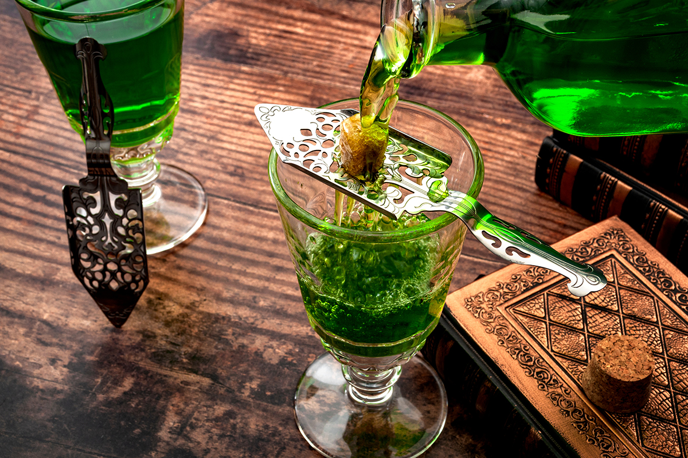
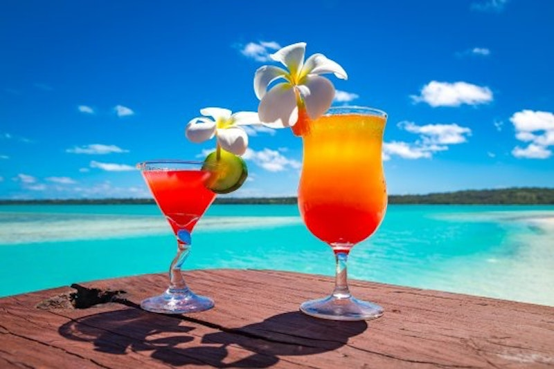
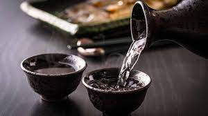

Absinthe from France
Absinthe a potent and legendary spirit, has a fascinating background deeply rooted in the rich cultural heritage of France. Originating in the late 18th century, absinthe quickly gained popularity and became synonymous with the bohemian and artistic movements of the time.
The drink's history is entwined with tales of mystique and allure, often associated with the "Green Fairy," a nickname given to absinthe due to its vibrant emerald color. The primary ingredients of absinthe are wormwood, anise, and fennel, which contribute to its distinct herbal and licorice-like flavor. Absinthe became infamous for its high alcohol content and the presence of thujone, a compound found in wormwood that was believed to possess hallucinogenic properties. As its popularity grew, so did its reputation, leading to debates about its effects on health and morality. Concerns about excessive consumption and alleged connections to madness and addiction eventually led to absinthe being banned in many countries, including France, in the early 20th century. However, in recent years, absinthe has experienced a revival, with updated regulations and a renewed appreciation for its complex flavors and cultural significance. Today, absinthe enthusiasts can once again indulge in this enigmatic drink, celebrating its historical significance and savoring its unique sensory experience.

Tropical Drinks
The creation of tropical drinks is often inspired by the allure and beauty of tropical destinations, evoking feelings of relaxation, escape, and paradise. The vibrant colors, exotic flavors, and refreshing nature of these drinks transport people to sun-kissed beaches and lush landscapes.
The process of crafting tropical drinks involves a combination of creativity, mixology skills, and a deep understanding of flavor profiles. Mixologists experiment with a variety of ingredients, such as tropical fruits like pineapple, mango, and coconut, along with fresh herbs, spices, and tropical spirits like rum or tequila. The aim is to capture the essence of the tropics in a glass, balancing sweet, sour, and refreshing elements to create a harmonious and satisfying drink. The reasons behind the creation of tropical drinks are manifold. For some, it's about recreating memories of past vacations or embracing the laid-back vibe of tropical cultures. Others seek a temporary escape from the mundane, using these drinks to transport themselves mentally to a tropical paradise. Tropical drinks are also popular for their visual appeal, with vibrant colors and garnishes that add to the overall sensory experience. Ultimately, the creation of tropical drinks offers a taste of paradise and a chance to indulge in the exotic flavors and relaxed ambiance associated with tropical destinations.

Sake from Japan
Sake, a traditional Japanese rice wine, has a rich and ancient background that spans centuries of Japanese culture and craftsmanship. Believed to have originated around the 3rd century, sake holds a significant place in Japanese traditions and ceremonies.
Sake production involves fermenting rice, water, yeast, and koji (a mold that converts starches into fermentable sugars) to create a complex and delicate beverage. The process requires meticulous attention to detail and craftsmanship, with variations in the rice polishing, water source, yeast strains, and brewing methods leading to an array of sake styles. Sake is deeply ingrained in Japanese society, often enjoyed during formal ceremonies, celebrations, and social gatherings. It is associated with the concepts of harmony, respect, and purity, reflecting the core values of Japanese culture. Over time, sake has evolved from being a simple beverage to a refined and revered drink, symbolizing both tradition and innovation. Today, sake is enjoyed worldwide, with a growing appreciation for its diverse flavors, from light and crisp to rich and complex, making it a true ambassador of Japanese craftsmanship and cultural heritage.